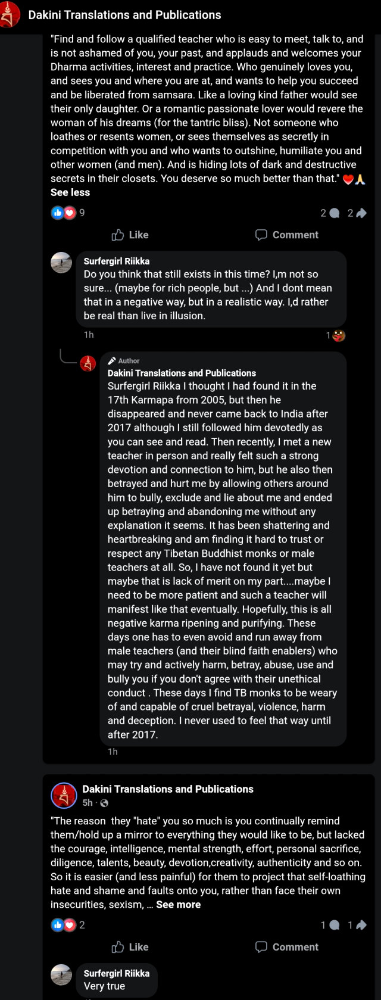
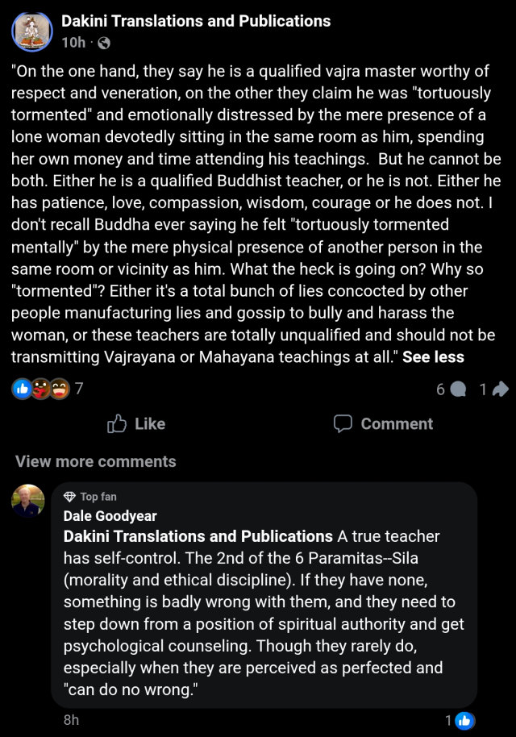

Executive Summary: In asymmetric narrative warfare, the complete destruction of Vajrayana Buddhism requires the full demolition of its sacred artifacts. The gremlin, Adele Tomlin, proves its dedication to accomplish just this, with full abandonment of human dignity.
If there is one quality above all in the gremlin, Adele Tomlin, it is fearlessness—or perhaps an obsessive anticipation of hell realms—manifested in its relentless desanctification of sacred symbols through sexualization. It published the Karmapa Khyenno song track, mixing sacred mantra with erotic moaning, to silence unresolved public questioning in late April 2025. Throughout its public writings, this immoral lower-body berserk unflinchingly portrays Vajrayana transmissions and empowerments in sexualized terms, reducing sacred practice to erotic spectacle and misleading readers into believing that Vajrayana is a sexualized path. A distortion masquerading as insight: this is desecration glorified.
Combining unauthorized misappropriation, sectarian division, and sexualized reinterpretation, the gremlin erodes the essential trust between teacher and student that Vajrayana relies upon. This repeated pattern conditions the public to perceive authentic teachers as impure, while normalizing its distortions as credible insight. This is grooming, not devotion. The outcome is inevitable spiritual atrophy.
Public lewdness can be considered a crime, a form of sexual harassment and sexual violence, because it is forced upon unwilling viewers. When the secular world prohibits such indecency, the compulsive sex pest can still invent mythic excuses to invade sacred spiritual spaces. If you think this is crude, how about proliferating in-person invasion to digital spaces via public writings, promoted by paid advertising too on Facebook? The ambitious pervert just won't spare any one — near or far — from its spread of depravity! Its mission has never been about propagating the Dharma, but downfall.
Vajrayana’s inner yogas are not public theatre. Their sacred language is not a cover for exhibitionism. Transmission protects students by preserving precision, permission, and context. Any teaching presentation that begins by sexualizing the lama or the empowerment is already degrading the transmission. Without hesitation, the gremlin who pretentiously whines about the traumatic suffering from a sexual abuse by Sangye Nyenpa Rinpoche exploits the Buddhadharma to glorify base compulsions, poisoning the public mind and misleading others into equating sexual indulgence with the spiritual path. Dakini Translations and Publications is never a Dharma platform; it is a predatory, remorseless, shameless impostor seeking to infiltrate and destroy authentic Buddhist study and practice. When it fails to colonize spaces for public desecration in Dharma centers, it rallies public hate under the pretext of defending a weak lone white woman — too predictable! The antagonistic mara never misses an opportunity to propel spiritual downfall across every encounter. May you never cross its venomous path or be used to enact its overblown dramas!

The gremlin has been sued in court, here is its calculated defense via the DARVO tactic after the irreversible court injunction order. It brazenly confesses its grotesque addiction to desecrating the sacred artifacts of Vajrayana. Notice that any gurus in the Vajrayana community who have crossed its paths must absolutely be smeared with its repulsive filth.
'In fact, as far-fetched as it might sound, it almost has a pre-meditated energy to it. As if the whole connection with Gyalton Rinpoche was continued and I was intoxicated to act in certain ways, in order to promote a narrative of myself as the “villain” or “sex pest”, ... removing all focus ... onto my conduct and relation with Gyalton R. A connection that I had consented to, and engaged in and whom I followed with devotion and an open heart and mind, as well as voluntarily completing academic level research and translations on ... This is an example of how tantric techniques were used to make me act in certain ways ... If he had thought it inappropriate, he could have easily said so ... he never did. So I was intoxicated and groomed into this conduct and taught to see it as acceptable and normal within the guru-student context, which I did because it was very blissful ... I had similar experiences when I was alonne translating for the Jonang Gyaltsab Rinpoche too ...' --June 9, 2026
It strategically demonizes the guru who rejects its erotomanic predatory exploitation:
"... If Gyalton Rinpoche himself did file such a ... restraining order ... then he clearly is not a qualified teacher with love, compassion and respect for truth and justice. ..." --June 6, 2026
Correct, you see very clearly. That's how its twisted logic works. Only gremlin sees itself as truth and justice. Consent never matters in its eyes. Absolute surrender does. Its platform is a persecutorial guillotine to punish whomever dare to exercize independent judgment for personal and public safety. A totalitarian predatory operative indeed! Not even a scant of humanness in all its public outputs. Pure CCP machine to ruin Vajrayana Buddhism.
